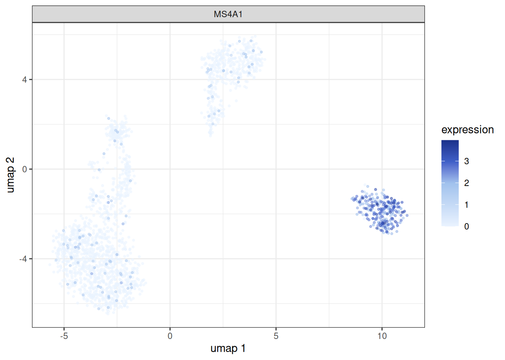
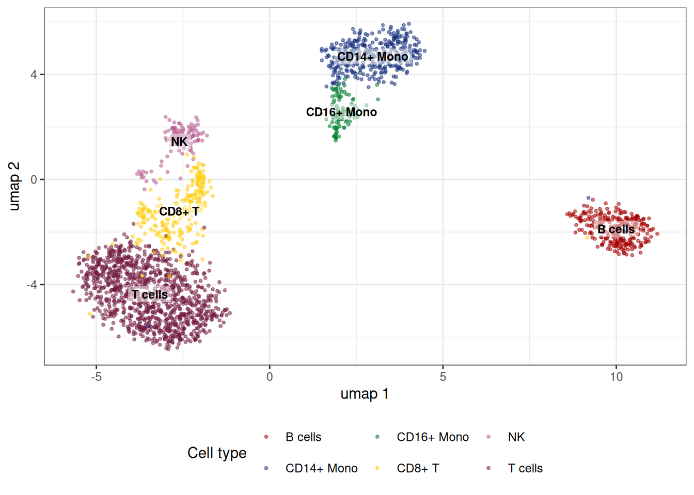
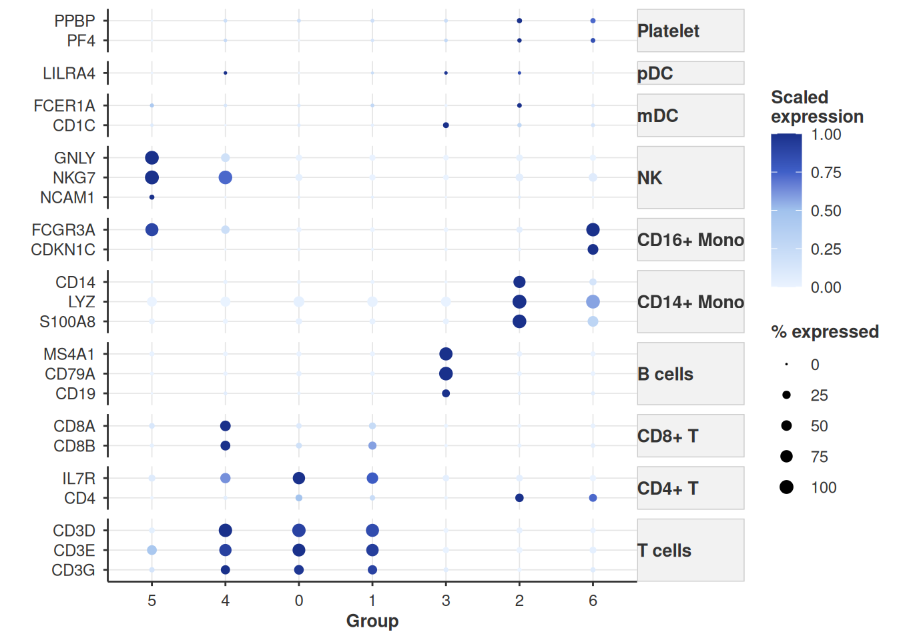

library(bixverse)
library(ggplot2)
library(data.table)
#>
#> Attaching package: 'data.table'
#> The following object is masked from 'package:base':
#>
#> %notin%
library(bixverse.plots)
library(magrittr)Analysing PBMCs with bixverse
2026-06-28
Intro
This vignette walks through a standard single cell analysis on the PBMC3k data set using bixverse. If you have not read the design choices and the introductory vignette, please do so first; this vignette assumes familiarity with how the SingleCells class, on-disk storage and cells-to-keep logic work.
Loading the data
We start by downloading the PBMC3k data set bundled with the package and loading it via Cell Ranger-style MTX I/O.
pbmc3k_path <- download_pbmc3k()
tempdir_pbmc <- tempdir()
sc_object <- SingleCells(dir_data = tempdir_pbmc)
mtx_io_params <- get_cell_ranger_params(pbmc3k_path)
sc_object <- load_mtx(
object = sc_object,
sc_mtx_io_param = mtx_io_params,
mtx_streaming = FALSE,
.verbose = TRUE
)
#> Using light streaming for the CSR to CSC conversion.
#> Loading observations data from flat file into the DuckDB.
#> Loading variable data from flat file into the DuckDB.
sc_object
#> Single cell experiment (Single Cells).
#> No cells (original): 2700
#> To keep n: 2700
#> No genes: 11139
#> HVG calculated: FALSE
#> PCA calculated: FALSE
#> Other embeddings: none
#> KNN generated: FALSE
#> SNN generated: FALSELet’s have a quick look at the variable table. The column names from the MTX files are not always informative, so we rename the gene symbol column to something sensible and set up mappings between Ensembl IDs and symbols.
var <- get_sc_var(sc_object)
head(var)
#> gene_idx gene_id column1 no_cells_exp
#> <num> <char> <char> <int>
#> 1: 1 ENSG00000225880 LINC00115 18
#> 2: 2 ENSG00000188976 NOC2L 258
#> 3: 3 ENSG00000188290 HES4 145
#> 4: 4 ENSG00000187608 ISG15 1206
#> 5: 5 ENSG00000131591 C1orf159 24
#> 6: 6 ENSG00000186891 TNFRSF18 92
setnames_sc(
object = sc_object,
table = "var",
old = "column1",
new = "gene_symbol"
)
var <- get_sc_var(sc_object)
ensembl_to_symbol <- setNames(var$gene_symbol, var$gene_id)
symbol_to_ensembl <- setNames(var$gene_id, var$gene_symbol)Quality control
Gene set proportions
A typical first step is computing the proportion of counts mapping to mitochondrial and ribosomal genes per cell. These are added directly to the obs table in the DuckDB.
gs_of_interest <- list(
MT = var[grepl("^MT-", gene_symbol), gene_id],
Ribo = var[grepl("^RPS|^RPL", gene_symbol), gene_id]
)
sc_object <- gene_set_proportions_sc(
sc_object,
gs_of_interest,
streaming = FALSE,
.verbose = TRUE
)
head(sc_object)
#> cell_idx cell_id nnz lib_size to_keep MT Ribo
#> <num> <char> <num> <num> <lgcl> <num> <num>
#> 1: 1 AAACATACAACCAC-1 778 2418 TRUE 0.030190241 0.4371381
#> 2: 2 AAACATTGAGCTAC-1 1346 4896 TRUE 0.037990198 0.4246323
#> 3: 3 AAACATTGATCAGC-1 1126 3144 TRUE 0.008905852 0.3171120
#> 4: 4 AAACCGTGCTTCCG-1 953 2632 TRUE 0.017477203 0.2431611
#> 5: 5 AAACCGTGTATGCG-1 520 979 TRUE 0.012257406 0.1491318
#> 6: 6 AAACGCACTGGTAC-1 779 2154 TRUE 0.016713092 0.3635097As we can see we now have MT and Ribo as columns in the obs table.
MAD outlier detection
We use per-cell QC metrics and MAD-based outlier detection to flag problematic cells. The run_cell_qc function returns a CellQc object that carries the metrics, per-metric outlier calls and a combined outlier vector.
qc_df <- sc_object[[c("cell_id", "lib_size", "nnz", "MT")]]
metrics <- list(
log10_lib_size = log10(qc_df$lib_size),
log10_nnz = log10(qc_df$nnz),
MT = qc_df$MT
)
directions <- c(
log10_lib_size = "twosided",
log10_nnz = "twosided",
MT = "above"
)
qc <- run_cell_qc(
metrics = metrics,
cells_to_keep = get_cells_to_keep(sc_object),
directions = directions,
threshold = 3
)
qc
#> CellQc: 2700 cells, 537 outliers (19.9%)
#> Metrics:
#> - log10_lib_size: 336 outliers
#> lower = 3.05, upper = 3.64
#> - log10_nnz: 383 outliers
#> lower = 2.70, upper = 3.12
#> - MT: 201 outliers
#> upper = 0.04The CellQc class has a few associated plotting functions using the output of run_cell_qc and the specified metrics as input
-
violin_plot_scmethod that produces violin plots with outliers highlighted.
plots <- violin_plot_sc(qc)
plots$log10_lib_size + plots$log10_nnz + plots$MT
-
joint_plot_scmethod that compares the genes versus UMIs per cell.
joint_plot_sc(qc)
#> Warning: Computation failed in `stat_binhex()`.
#> Computation failed in `stat_binhex()`.
#> Caused by error in `compute_group()`:
#> ! The package "hexbin" is required for `stat_bin_hex()`.
Filtering cells
We store the outlier flag in the obs table and then set the cells to keep. From this point on, all downstream methods (HVG selection, PCA, etc.) will only operate on the retained cells.
sc_object[["outlier"]] <- qc$combined
cells_to_keep <- qc_df[!qc$combined, cell_id]
sc_object <- set_cells_to_keep(sc_object, cells_to_keep)
sc_object
#> Single cell experiment (Single Cells).
#> No cells (original): 2700
#> To keep n: 2163
#> No genes: 11139
#> HVG calculated: FALSE
#> PCA calculated: FALSE
#> Other embeddings: none
#> KNN generated: FALSE
#> SNN generated: FALSEFeature selection, PCA and neighbours
With QC done, we move through the standard pipeline: highly variable gene selection, PCA, and nearest neighbour computation.
sc_object <- find_hvg_sc(
object = sc_object,
hvg_no = 2000L,
.verbose = TRUE
)
sc_object <- calculate_pca_sc(
object = sc_object,
no_pcs = 30L,
sparse_svd = TRUE
)
#> Using sparse SVD solving on scaled data on 2000 HVG.
# the data is so tiny that exhaustive kNN search is faster than building
# an approximate nearest neighbour index
sc_object <- find_neighbours_sc(
object = sc_object,
neighbours_params = params_sc_neighbours(
knn = list(knn_method = "exhaustive")
)
)
#>
#> Generating sNN graph (full: TRUE).
#> Transforming sNN data to igraph.Clustering and marker detection
Leiden clustering
Leiden clustering followed by differential gene expression across all clusters. You can also run Louvain if you want, but Leiden is thought of to have better properties, see Traag, et al..
sc_object <- find_clusters_sc(sc_object, res = 1, name = "leiden_clusters")
all_markers <- find_all_markers_sc(
object = sc_object,
column_of_interest = "leiden_clusters"
)
#> Processing group 1 out of 7.
#> Processing group 2 out of 7.
#> Processing group 3 out of 7.
#> Processing group 4 out of 7.
#> Processing group 5 out of 7.
#> Processing group 6 out of 7.
#> Processing group 7 out of 7.
all_markers[, gene_symbol := ensembl_to_symbol[gene_id]]
head(all_markers[fdr <= 0.05][order(-abs(lfc))])
#> grp gene_id lfc prop1 prop2 z_scores p_values
#> <int> <char> <num> <num> <num> <num> <num>
#> 1: 2 ENSG00000163220 4.155627 0.9831461 0.2014388 28.94462 1.639847e-184
#> 2: 5 ENSG00000115523 4.124791 0.9710145 0.1308642 18.84557 1.597530e-79
#> 3: 5 ENSG00000105374 4.088584 1.0000000 0.2464198 19.09652 1.349314e-81
#> 4: 2 ENSG00000090382 4.060530 0.9971910 0.5107914 29.53159 5.660450e-192
#> 5: 2 ENSG00000143546 3.646430 0.9691011 0.1151079 28.54947 1.425784e-179
#> 6: 2 ENSG00000101439 3.415613 0.9943820 0.2385169 28.15655 9.960795e-175
#> fdr gene_symbol
#> <num> <char>
#> 1: 3.718354e-181 S100A9
#> 2: 3.701476e-76 GNLY
#> 3: 6.252719e-78 NKG7
#> 4: 2.567014e-188 LYZ
#> 5: 2.155310e-176 S100A8
#> 6: 1.129305e-171 CST3Fast clustering
In the case of large data sets there is an option to run an accelerated form of clustering. This runs first k-means clustering (with default sqrt(N) cells), then kNN on the centroids, followed by Louvain (Leiden is not yet supported, but on the to-do list) across a set of resolutions. There is also an option to run this across several seeds to check for stability of the clustering. If you ran the grid search, the membership
fast_cluster_res <- fast_cluster_sc(
object = sc_object,
resolutions = c(5, 3, 2, 1.5, 1, 0.5),
# also return the k-mean clustering
return_kmeans = TRUE,
no_seeds = 25L,
grid_search = TRUE
)
fast_clusted_dt <- get_data(fast_cluster_res)
head(fast_clusted_dt)
#> cell_idx res_5 res_3 res_2 res_1.5 res_1 res_0.5
#> <int> <int> <int> <int> <int> <int> <int>
#> 1: 1 8 2 2 2 0 0
#> 2: 3 14 2 2 2 0 0
#> 3: 4 2 1 1 1 2 2
#> 4: 6 8 2 2 2 0 0
#> 5: 8 11 2 2 2 0 0
#> 6: 9 11 2 2 2 0 0If you want to explore the k-means memberships or centroids, there are getters for this.
centroids <- get_centroids(fast_cluster_res)
kmeans_membership <- get_kmeans_clusters(fast_cluster_res)You can add the data to the object via:
sc_object <- add_sc_new_obs(
object = sc_object,
obs_data = get_data(fast_cluster_res)
)
head(sc_object)
#> cell_idx cell_id nnz lib_size to_keep MT Ribo
#> <num> <char> <num> <num> <lgcl> <num> <num>
#> 1: 1 AAACATACAACCAC-1 778 2418 TRUE 0.030190241 0.4371381
#> 2: 3 AAACATTGATCAGC-1 1126 3144 TRUE 0.008905852 0.3171120
#> 3: 4 AAACCGTGCTTCCG-1 953 2632 TRUE 0.017477203 0.2431611
#> 4: 6 AAACGCACTGGTAC-1 779 2154 TRUE 0.016713092 0.3635097
#> outlier leiden_clusters res_5 res_3 res_2 res_1.5 res_1 res_0.5
#> <lgcl> <int> <int> <int> <int> <int> <int> <int>
#> 1: FALSE 0 8 2 2 2 0 0
#> 2: FALSE 0 14 2 2 2 0 0
#> 3: FALSE 6 2 1 1 1 2 2
#> 4: FALSE 0 8 2 2 2 0 0Dimensionality reduction
Let us run quickly UMAP and tSNE.
We can use bixverse.plots package which provides some basic plotting functions such as:
- Plotting the embedding using
embedding_plot_scto check out the UMAP embeddings:
embedding_plot_sc(
sc_object,
embedding = "umap",
colour_by = "leiden_clusters",
label_by = "leiden_clusters",
discrete = TRUE
)
- Let’s check out tSNE
embedding_plot_sc(
sc_object,
embedding = "tsne",
colour_by = "leiden_clusters",
label_by = "leiden_clusters",
discrete = TRUE
)
- We can also plot a gene expression on the embedding space using
feature_plot_sc:
feature_plot_sc(
object = sc_object,
features = "ENSG00000156738",
feature_labels = c("ENSG00000156738" = "MS4A1"),
embedding = "umap"
)
Cell type annotation
Define a set of marker genes to perform cell type annotation.
cell_markers <- c(
CD3D = "T cells",
CD3E = "T cells",
CD3G = "T cells",
IL7R = "CD4+ T",
CD4 = "CD4+ T",
CD8A = "CD8+ T",
CD8B = "CD8+ T",
MS4A1 = "B cells",
CD79A = "B cells",
CD19 = "B cells",
CD14 = "CD14+ Mono",
LYZ = "CD14+ Mono",
S100A8 = "CD14+ Mono",
FCGR3A = "CD16+ Mono",
CDKN1C = "CD16+ Mono",
GNLY = "NK",
NKG7 = "NK",
NCAM1 = "NK",
FCER1A = "mDC",
CD1C = "mDC",
LILRA4 = "pDC",
CLEC4C = "pDC",
PPBP = "Platelet",
PF4 = "Platelet"
)Let’s annotate the PBMCs using the scType cell type annotation algorithm by Ianevski et al. (2022). We first prepare the cell type markers into the right format using prepare_cell_markers helper functions. Subsequently calculate the scType score using calc_sc_type_scores and summarise on cluster level to get the annotated cell type using score_clusters. Finally, we can assign back the cell type annotation into the sc_object.
cell_markers_dt <- stack(cell_markers) %>%
as.data.table() %>%
setnames(., c("values", "ind"), c("cell_type", "gene_symbol")) %>%
.[, gene_symbol := as.character(gene_symbol)] %>%
.[, gene_id := var$gene_id[match(gene_symbol, var$gene_symbol)]] %>%
.[!is.na(gene_id), ]
## Prepare the list of markers
marker_list <- prepare_cell_markers(sc_object, cell_markers_dt)
## Calculate the score for each cell
sctype_scores <- calc_sc_type_scores(
object = sc_object,
cell_marker_list = marker_list
)
## Annotate the clusters
cell_type_anno <- score_clusters(
sctype_scores,
sc_object[[]][["leiden_clusters"]]
)We can add the cell type annotation back into the sc_object.
obs <- get_sc_obs(sc_object, filtered = TRUE)[, .(
cell_idx,
leiden_clusters
)] %>%
.[,
sc_type := cell_type_anno$cell_type[match(
leiden_clusters,
cell_type_anno$cluster_id
)]
]
sc_object[["sc_type"]] <- obs$sc_type
embedding_plot_sc(
sc_object,
embedding = "umap",
colour_by = "sc_type",
label_by = "sc_type",
discrete = T
) +
labs(color = "Cell type") +
theme(legend.position = "bottom")
Alternatively, we can also show the expression levels of the cell type markers using the dotplot plotting function dot_plot_sc from bixverse.plots.
features_vec <- setdiff(symbol_to_ensembl[names(cell_markers)], NA)
feature_labels <- ensembl_to_symbol[features_vec]
dot_plot_sc(
object = sc_object,
features = features_vec,
feature_labels = ensembl_to_symbol[features_vec],
grouping_variable = "leiden_clusters",
scale_exp = TRUE,
feature_grouping = cell_markers,
cluster_groups = T
)
Per-cell gene expression
In addition to the feature plot (feature_plot_sc), we can also represent the gene expression using a violin plot
features <- symbol_to_ensembl[c(
"CD3D",
"IL7R",
"CD8A",
"MS4A1"
)]
feature_labels <- setNames(names(features), nm = features)
stacked_violin_plot_sc(
sc_object,
features = features,
feature_labels = feature_labels,
grouping_variable = "leiden_clusters"
)
Clean up
unlink(tempdir_pbmc, recursive = TRUE, force = TRUE)